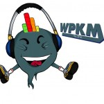

WVU Parkersburg radio station WPKM 96.3 The Beet to celebrate College Radio Day
WPKM is the first and only community college radio station in West VirginiaWPKM 96.3 FM The Beet, the college radio station for West Virginia University Parkersburg, will unite with other college radio stations across the world on Friday, Oct. 5 to celebrate College Radio Day. The event aims to...

Events
Oct. 8, 2018
Veteran's Corp Meeting
WVU Parkersburg, Veterans Resource Center